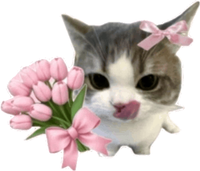

Untuk
Naizka
ISTANA KERAJAAN PERIZINAN KENCAN
KERAJAAN HATI • TITAH RESMI SANG PANGERAN
Perihal: Titah Kerajaan Undangan Kencan Akhir Pekan
Diverifikasi Oleh:
Restu Kerajaan & Ortu
Status Dokumen:
MUTLAK & SAH

Klik suratnya
Udah baca belum nihh?